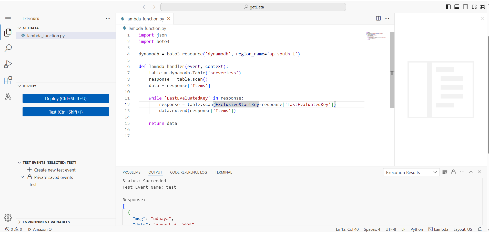
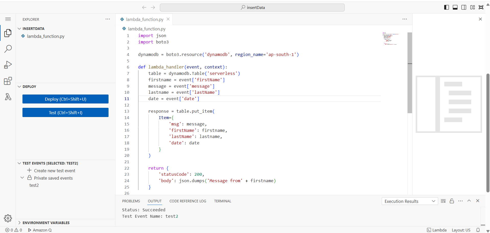

Step 3: Write Lambda Function
Log in to AWS Console & open API Gateway.
Create a new REST API while creating lambda post and get attach role with permissions eg : DynamoDB full access for lambda to read and write.
POST Lambda — receives form data and stores it in DynamoDB with a unique ID .
GET Lambda — retrieves saved contact entries from DynamoDB.
Enable CORS for frontend access and assign the Lambda execution role the necessary DynamoDB permissions and test using sample payloads.
Deploy API to a stage (e.g, prod).
GET Lambda IMAGE

POST Lambda IMAGE
